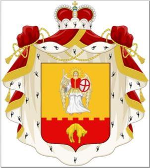
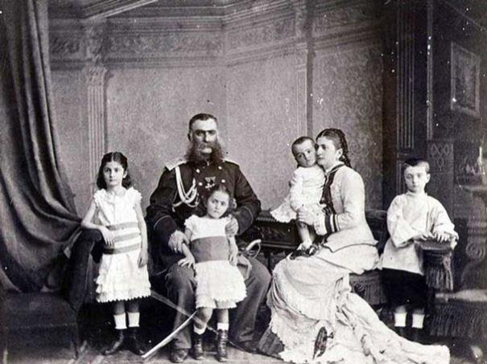
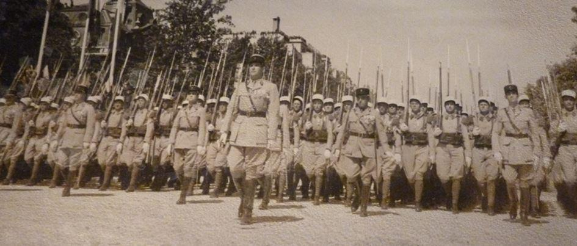
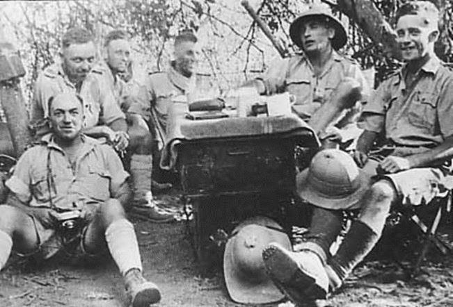
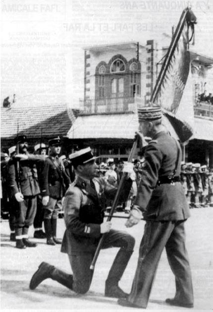
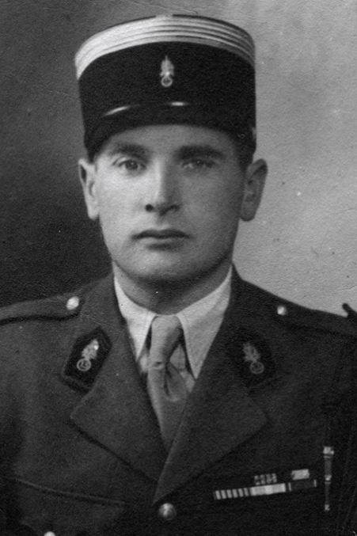
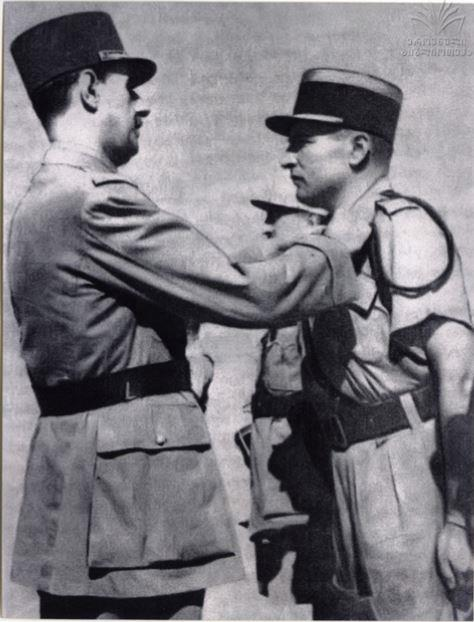
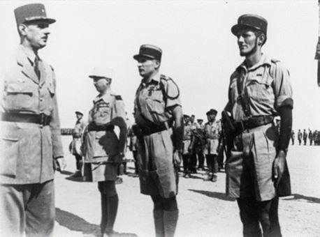
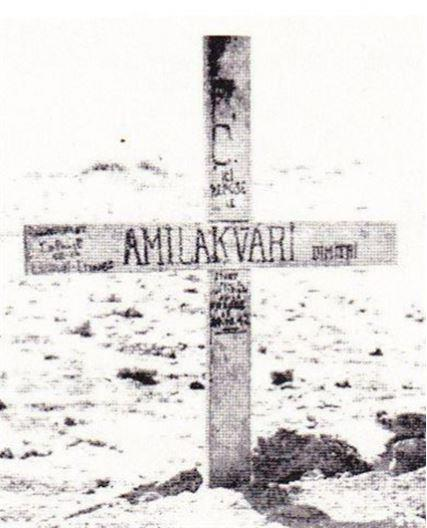
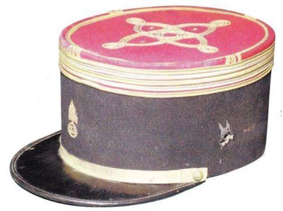

En 1926, la Légion étrangère compte, parmi tant d’officiers prestigieux, un ancien Saint-Cyrien de trente ans que tout promet à une carrière exceptionnelle. A condition qu’il devienne français, car il sert à titre étranger : la révolution russe l’a chassé de son pays à l’âge de 11 ans.
Le général Catroux qui l’a vu combattre, obéir et commander au feu dans le sud marocain, le convoque et lui propose de le faire naturaliser pour « lever l’hypothèque ». Figé dans le garde-à-vous légionnaire, Dimitri Amilakvari répond :
- Je suis très sensible à l’honneur qui m’est fait, mon général. Permettez-moi de le refuser. Je suis totalement dévoué à la France. Mais je suis géorgien. Je reste fidèle à ma patrie.
Amilakvari descend de la maison des Zedguinidzé. Un de ses ancêtres, Jonathan, se sacrifie jadis et tombe sous le fer des assassins pour sauver la vie de son roi. Il gagne alors pour sa lignée, la charge héréditaire de Grand Ecuyer de la couronne et de commandant de la cavalerie cosaque du Caucase. Son blason s’orne alors de l’aile de l’Archange Saint-Georges.
Né dans le village de Bazorkino (aujourd'hui Tchermen, Raïon Prigorodny) dans le Caucase du Nord, le 31 octobre 1906, Dimitri Amilakvari est fils du prince Georges et de Nina Eristhavi.

Le Prince Ivane Amilakhvari (1829—1905), son grand –père
Après l'invasion de la Géorgie par l'Armée rouge le 25 février 1921, la famille Amilakvari prend le chemin de l'exil. Dimitri, âgé de onze ans, arrive à Istanbul avec sa mère. Il y demeure cinq ans et fait ses études dans une institution britannique.
En 1922, la famille se fixe en France. En digne descendant de la noblesse d'épée géorgienne, Dimitri Amilakvari se fait admettre à l'École spéciale militaire de Saint-Cyr le 13 octobre 1924 et intègre la promotion du Rif. À l’issue, il reçoit sa première affectation au 1er REI en qualité de sous-lieutenant à titre étranger, le 1er oct. 1925. Il est promu lieutenant le 1er oct. 1926. Le 1er oct. 1928, il rejoint la 1e compagnie du 1er bataillon du 4e REI à Marrakech, sous les ordres du colonel Catroux. En pleine pacification, il partage la rude vie des légionnaires sur les pistes, alternant périodes d'instruction et colonnes dans le bled.
UN VÉRITABLE CHEF DE GUERRE
En 1931, muté à la 3e compagnie, il prend part aux opérations de pacification du Maroc et participe à la campagne du Haut-Atlas durant laquelle il dirige une section. Pour contrer les dissidences des tribus marocaines, son bataillon est chargé, le 30 mai 1932, d'occuper le plateau des Izeroualem où une forte concentration ennemie a été détectée. Ce sera sa première action d'éclat au combat, pour laquelle il reçoit1 sa première citation à l’ordre de la division avec la croix de guerre des Territoires d’opérations extérieurs.
À la tête de ses légionnaires, Amilakvari participe à toutes les entreprises de renforcement de la présence française dans le sud-marocain. Les combats des mois d'août et septembre 1932 sont particulièrement violents et Amilakvari s'illustre une fois de plus par sa bravoure et sa conduite au feu. Il reçoit la seconde, à l’ordre du corps d’armée, le 30 déc. 1933, pour la reddition des rebelles après un violent corps à corps au Djebel Baddou.
Le 1er janvier 1937, il est nommé au grade de capitaine et deux mois plus tard retourne au 1er régiment étranger (1er RE), où il prend le commandement de la compagnie d'instruction de mitrailleuses de Sidi-Bel-Abès jusqu'en août 1939. C’est à la tête de sa compagnie que le capitaine Amilakvari défilera sur les Champs Elysées le 14 Juillet 1939.Un évènement important pour la Légion étrangère puisqu’elle défile pour la première fois depuis sa création sur la fameuse avenue parisienne. Après s’être recueilli devant le cénotaphe du soldat inconnu un dépôt de gerbe est fait au pied de la statue du maréchal Foch. Sur le ruban tricolore est écrit : « Passant, va dire à la France que la Légion étrangère est là ».

14 Juillet 1939, le capitaine Amilakvari à la tête de sa compagnie sur les Champs Élysées
Le 20 février 1940, un bataillon de marche de la Légion est créé à Sidi Bel-Abbès et à Fez, qui reçoit bientôt la dénomination de 13e demi-brigade de montagne de Légion étrangère. Le prince y est affecté et c'est donc avec la 13e DBMLE qu'il entre dans la Seconde Guerre mondiale.
COMBATS HÉROÏQUES EN NORVÈGE.
Volontaire, le capitaine Amilakvari rejoint le 2e bataillon et prend le commandement de la compagnie d'accompagnement bataillonnaire n° 2 (CAB 2). Au mois de mars, il devient français par décret de naturalisation. La demi-brigade s'embarque à bord du Metzinger puis du Ville d'Alger qui appareillent vers la Norvège le 30 avril.
Le 13 mai 1940, la « 13 », aux ordres du colonel Magrin-Vernerey, débarque sur Rombaken Fjord. Le capitaine Amilakvari, commande la compagnie d’accompagnement du 2e bataillon qui s’empare de la côte 98 dominant le camp d’Elversgaart. Le 18 mai, il est légèrement blessé à la gorge. Après avoir enlevé Narvik, du 28 mai au 7 juin, et repoussé les troupes allemandes en Suède, la « 13 » rejoint la Bretagne.
L’ARMISTICE
Le moment de l'armistice devient vite celui du choix, homme d'honneur et de convictions, "Bazorka", comme il aime se faire appeler en hommage à son village natal, décide en juin 1940 de poursuivre le combat aux côtés du général de Gaulle. Suivant son chef, le colonel Magrin-Vernerey, alias Monclar et le capitaine Kœnig, il rallie les Français libres, malgré les sollicitations de certains chefs militaires qui les pressent de rejoindre le Maroc. Ils entraînent avec eux 1.100 légionnaires. Trois jours après son retour sur les côtes bretonnes, il s'embarque le 19 juin de Saint-Jacut de la Mer avec les hommes de la 13e, et rejoint l'Angleterre le 21, via l'île de Jersey.
Le capitaine Amilakvari, cité en Norvège, reçoit la croix de chevalier de la Légion d’honneur, le 5 sept. 1940. Devenu Légionnaire FFL, Dimitri Amilakvari rejoint Dakar dans les jours suivants pour participer à l'opération "Menace", avant de partir à la conquête de l'AOF pétainiste (Gabon, Cameroun), de rallier l'Erythrée puis les territoires du Levant.
EN ÉRYTHRÉE ET EN SYRIE AVEC LES FFL
« Bazorka » est incorporé à la Brigade d'Orient au début de 1941 et prend part, à la tête de la compagnie d'accompagnement du 1er Bataillon de Légion étrangère à la victoire de Keren (mars 1941) et à la prise de Massaouah (8 avril). Il s'illustre à nouveau pendant la campagne de Syrie en juin 1941 et décroche ses galons de chef de bataillon.

Érythrée, 1941. Deuxième à partir de la droite le capitaine Amilakvari
 Le Lieutenant-colonel Amilakvari s'agenouille pour recevoir le drapeau de la 13ème D.B.L.E. des mains du Général CatrouxLe 16 septembre suivant, il prend le commandement de la 13e DBLE et est promu lieutenant-colonel une semaine plus tard. Combattant de valeur, meneur d'hommes, il réorganise ses troupes qu'il entraîne à la guerre dans le désert, conduite qui lui vaudra de recevoir des mains du général Catroux le drapeau de la 13e, le 19 octobre 1941, à Homs.
Le 3 décembre 1941, il est condamné par contumace, avec ses camarades, par le tribunal militaire permanent d’Oran, pour désertion à l’étranger en temps de guerre2.
Le 28 mars 1941, c’est la bataille de Keren contre les askari éthiopiens, à la tête de la compagnie d’accompagnement n° 1, puis celle de Enghiahat et la prise de Massawah, le 8 avril 1941. La bataille va être rude, et l’impossible, comme toujours, c’est à la Légion qu’on le demande :
-Mon colonel, dit-il à Monclar, vous savez que nous vous obéirons toujours. Nous sommes des condamnés à mort avec sursis. Mais nos pertes ne sont jamais compensées par des renforts. Alors je vous en supplie, faites nous tuer pour des choses qui en valent la peine.
En mai 1941, la 1e division française libre (1e DFL) est en Palestine pour prendre part à la guerre de Syrie. Moment douloureux où les légionnaires de la « 13 » sont face-à-face avec les légionnaires du 6e REI. Devant Damas, le Prince est déchiré, hésitant pour la première fois. De l’autre côté ce ne sont pas seulement des Français, c’est aussi la Légion. En juin 1941, Amilakvari, promu chef de bataillon, obtient du commandement de n’être engagé que dans le cas de nécessité absolue. Toutefois le 15 juin, c’est l’engagement. Le capitaine qui commande les vichystes est tué, et c’est l’ami de toujours, l’ancien camarade de Saint -Cyr d’Amilakvari.
Promu lieutenant-colonel, il prend, le 19 oct. 1941, à Homs, le commandement de la « 13 » renforcée de 2.000 légionnaires ralliés du 6e REI.
Dès lors, pour la Légion pour les Français libres, le Prince et la célèbre pèlerine qu’il porte au combat sont devenus une légende. On les voit ensemble à Bir-Hakeim, naturellement où Koenig lui confie les missions les plus difficiles. On dit de lui, comme beaucoup de chefs, qu’il a la « baraka ». Mais le Prince n’en est plus certain.
Engagé dès le début de la campagne de Libye avec les Britanniques, « Bazorka » commande une Jock column : groupement tactique constitué d'éléments d'infanterie motorisée, d'une batterie d'artillerie tractée, d'un peloton d'automitrailleuses, d'une section de canons antichars de 75 mm et d'éléments légers de DCA, du génie et de transmissions radio. Il fait preuve d'audace et de bravoure aux côtés du général Koenig (1ère BFL) pendant la bataille de Bir-Hakeim (26 mai - 11 juin 1942).
Le général de Gaulle lui remet alors en personne la Croix de la Libération au camp de El Tahag (Egypte) le 10 août 1942.
Le 23 octobre, la bataille d’El Alamein commence. Le général Kœnig a pour mission de s’emparer du plateau de l’Himeimat que défendent deux bataillons italiens et dont la falaise de 80 mètres à pic le désert. Le premier échelon d’attaque est constitué par deux bataillons de la 13e DBLE, mais la forte résistance ennemie oblige le lieutenant-colonel Amilakvari à faire reculer ses hommes. Il harangue ses troupes en ces termes : « Ce n’est pas la première fois que l’on nous demande quelque chose d’impossible, mais cette fois c’est tellement c... que cela peut réussir »
Le Prince part le premier, comme il se doit, du pas lent des légionnaires, tout droit à travers le champ de mines, à la clarté brutale de la pleine lune. Le premier bataillon tente l’impossible assaut, et il est repoussé, avec des pertes sanglantes. Il est cinq heures passées :
-Légionnaires, dit le Prince, il faut qu’à six heures le piton soit à nous. Pour l’honneur de la Légion.
 Dans le sable d'El-Alamein, une simple croix rappelle la mort héroïque, le 23 octobre 1942, d'un prince né en Géorgie et mort pour la FranceLà-haut, on se bat au couteau, contre les parachutistes ennemis, pour garder le plateau, qui a été pris, naturellement. Mais les panzers allemands arrivent et la Légion n’a pas d’artillerie. Elle se replie, du même pas lent, à travers le champ de mines. Le Prince le dernier comme il se doit.
Un éclat d’obus l’atteindra au front, ce 24 octobre 1942, juste sous le képi. Il ne s’est pas baissé, il faisait encore face. Son adjoint, le capitaine Saint-Hillier, prend le colosse sanglant dans ses bras et s’aperçoit alors que le Prince avait perdu sa pèlerine au combat…
Il est enterré le lendemain sur les pentes du Quart el Himeimat. Monclar cite à l’Ordre de l’Armée « l’officier qui a réussi à étonner les légionnaires et s’est montré en toutes circonstances le prince Amilakvari. »
Marié, le 25 août 1927 à la princesse Irène Dadiani, originaire de Bakov, de la famille régnante de Mingrélie, il est naturalisé français par décret en date du 11 mars 19403. Chevalier de la Légion d’honneur, Compagnon de la Libération, il est 2 fois cité avec croix de guerre des TOE, 5 fois cité avec croix de guerre 1939 1945 dont 4 à l’ordre de l’armée. Titulaire de la médaille des évadés, de la médaille coloniale avec agrafe « Maroc », il est officier du Ouissam Alaouite et décoré de la croix de guerre norvégienne.
Son képi taché de sang et l’éclat d’obus qui le blessa mortellement sont gardés au musée de la Légion à Aubagne. On peut citer une parole prémonitoire du prince : « Nous, étrangers, n’avons qu’une seule façon de prouver à la France notre gratitude pour l’accueil qu’elle nous a faite : c’est de mourir pour elle ».

F.M.
Notes :
1 : le 14 août 1932.
2 : Cette condamnation sera annulée par arrêt de la chambre de révision de la cour d’appel d’Alger, en date du 21 octobre. 1943.
3 : Source : SIHLE – Général de corps d’armée de Saint Hillier.
Partager cette page